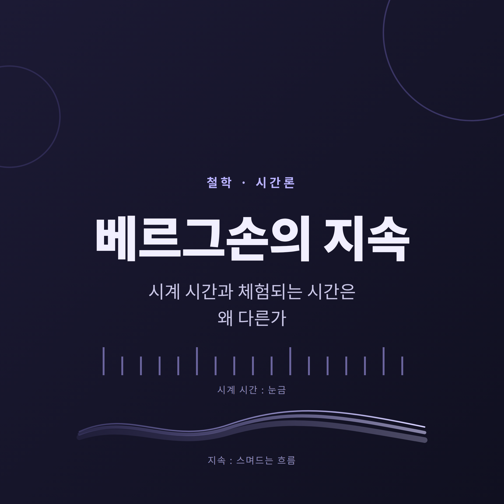
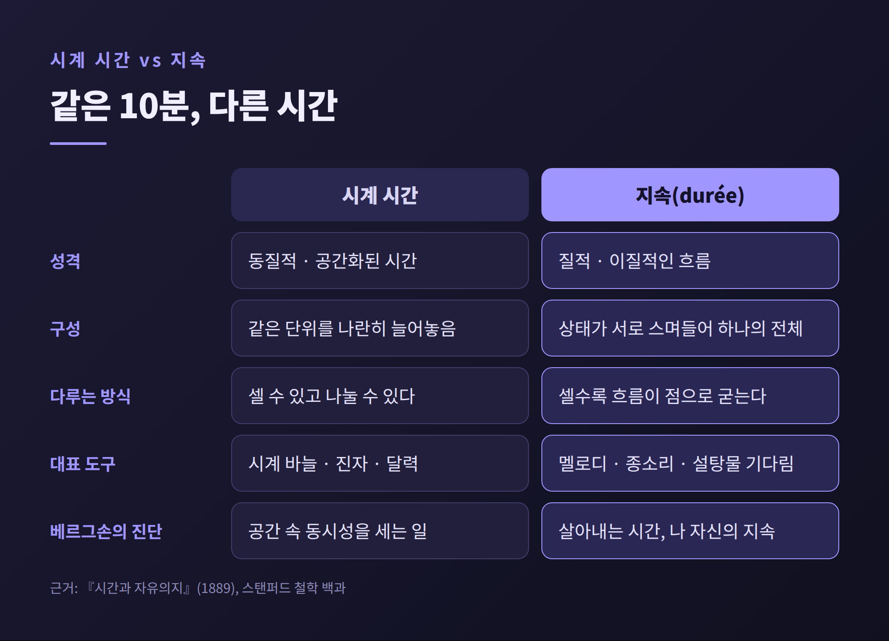
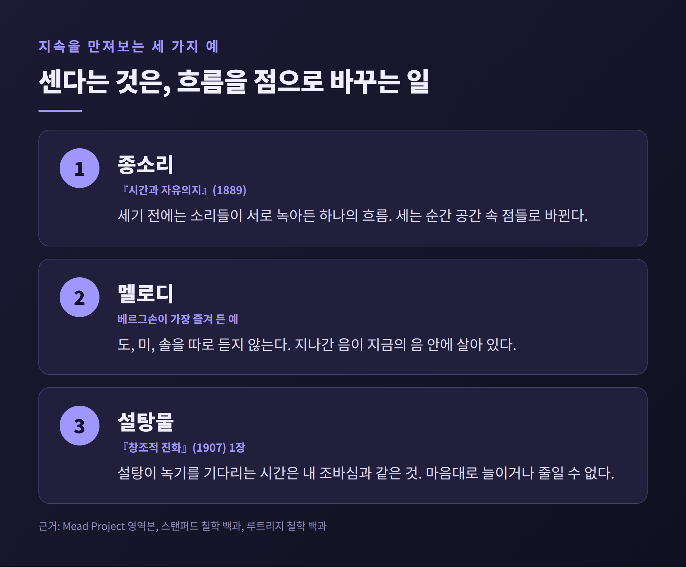
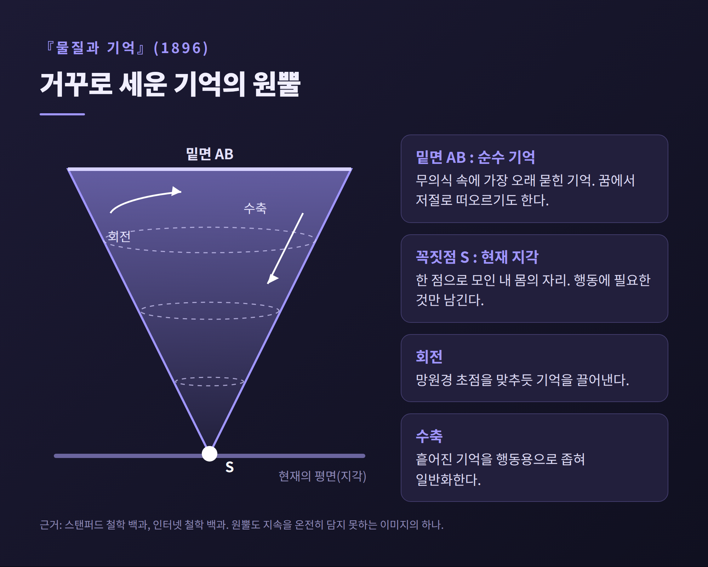
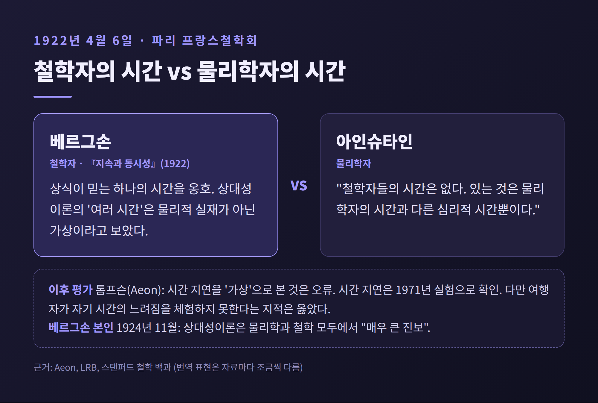
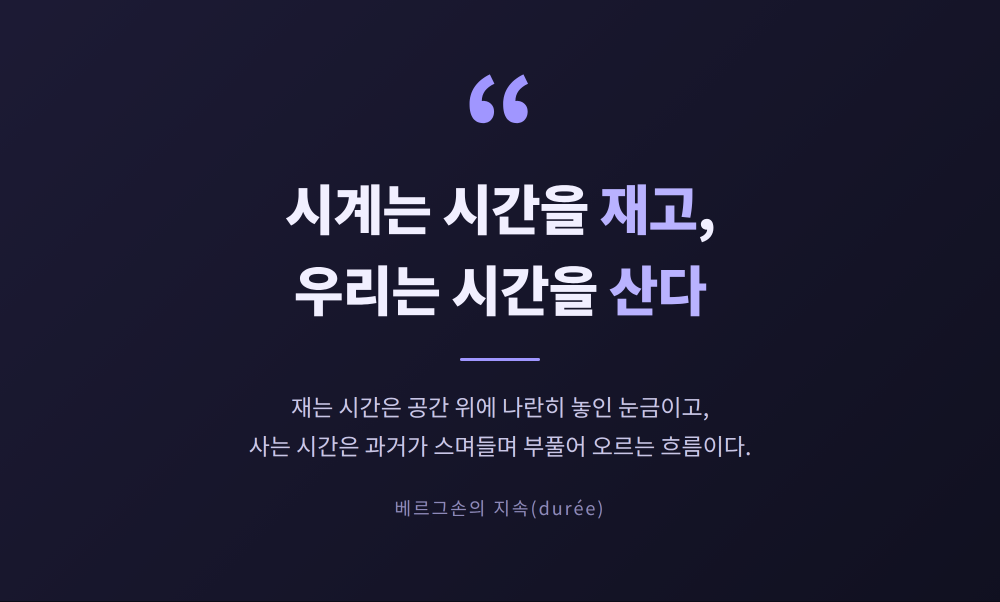

오늘은 앙리 베르그손이 말한 지속(durée)에 대해 이야기해 보려 합니다.
시계가 재는 한 시간과 우리가 살아내는 한 시간이 왜 같지 않은지, 그 차이를 그는 어떻게 설명했는지 따라가 봅니다.
결론부터 말하면 이렇습니다. 시계는 시간을 공간에 줄 세워 재는 도구이고, 지속은 과거가 현재 속으로 스며들며 부풀어 오르는 흐름입니다.

지루한 회의에서 보내는 10분과 좋아하는 사람과 나누는 10분은 길이가 다릅니다.
시계는 둘을 똑같이 10분이라고 기록합니다. 그러나 우리는 그 둘이 같다고 느끼지 않습니다.
베르그손은 이 간극을 사소한 착각으로 넘기지 않았습니다.
그는 어긋남이 있다면 잘못은 체험이 아니라 시계를 시간 자체로 여기는 우리의 습관에 있다고 보았습니다.
베르그손은 1859년 파리에서 태어나 1941년에 세상을 떠난 프랑스 철학자입니다.
1889년에 박사학위 논문 『시간과 자유의지』(원제 『의식에 직접 주어진 것들에 관한 시론』)를 내며 지속이라는 개념을 내놓았습니다.
1927년 노벨 문학상 수상자로 지정되었고, 실제 수상은 이듬해인 1928년에 이루어졌습니다.
수상 사유는 "풍부하고 생명력 넘치는 사상과 그것을 제시한 탁월한 기량"이었습니다.

베르그손의 출발점은 이 한 문장으로 요약됩니다. 우리가 시계로 재는 것은 시간의 흐름이 아니라 공간 속의 위치라는 것입니다.
시계 바늘이 어디쯤 있는지, 진자가 몇 번 왔다 갔는지를 우리는 눈으로 확인합니다.
진자의 진동을 세는 일은, 그의 표현을 빌리면 공간 속의 동시성을 세는 일입니다.
"내 안에서는 의식 상태가 조직되고 서로 스며드는 과정이 진행되는데, 이것이 참된 지속이다. 병치가 일어나는 곳은 순수 지속이 아니라 공간이다."
이 구분의 바탕에는 두 종류의 다양성이 있습니다.
하나는 양적 다양성입니다. 양 떼를 세듯 개체 차이를 지우고, 같은 단위를 나란히 늘어놓아 헤아리는 방식입니다.
다른 하나는 질적 다양성입니다. 여러 상태가 서로 스며들어 하나의 전체를 이루므로 단위로 셀 수 없습니다.
시계 시간은 앞의 것이고, 지속은 뒤의 것입니다.
시계나 달력은 동질적인 시간의 형식이며, 지속이 이렇게 잘게 나뉘고 측정 가능한 양으로 바뀌는 순간 체험된 시간이 가려진다는 것이 베르그손의 진단입니다.
개념만으로는 와닿지 않으니 그가 든 예를 보겠습니다.
첫째, 종소리입니다.
『시간과 자유의지』에서 베르그손은 시계가 울리는 소리를 듣는 장면을 그립니다.
종소리를 헤아리지 않고 있다가 뒤늦게 몇 번 울렸는지 세어 보려 하면, 앞의 네 번이 이미 귀에 들어와 의식에 영향을 주었다는 것을 알게 됩니다.
각각의 소리는 나란히 놓여 있지 않고 서로 "녹아들어" 있었다는 것입니다.
개수를 맞히려면 그 소리들을 상상 속에서 다시 늘어놓아야 합니다.
세기 전의 체험은 하나의 흐름이었고, 세기 시작하는 순간 그것은 공간 속의 점들로 바뀝니다.
둘째, 멜로디입니다.
멜로디는 베르그손이 가장 즐겨 든 예로 전해집니다.
우리는 도, 미, 솔을 따로 듣지 않습니다. 이미 지나간 음이 지금 들리는 음 안에 살아 있어 하나의 곡조가 됩니다.
그는 이를 곡조의 음들이 서로 녹아 들어가는 것에 빗대었습니다.
이 구조는 훗날 철학자들이 체험된 현재를 설명할 때 다시 등장합니다.
윌리엄 제임스는 『심리학 원리』(1890)에서 우리가 직접 의식하는 짧은 지속을 '사이비 현재(specious present)'라 불렀습니다.
에드문트 후설은 지금 막 지나간 것을 붙드는 파지와 곧 올 것을 열어 두는 예지를 지금의 구조에 넣었습니다.
표현은 다르지만, 체험되는 현재가 하나의 점이 아니라는 직관은 공통입니다.
셋째, 설탕물입니다.
이 예는 『창조적 진화』(1907) 1장에 나옵니다.
"설탕 한 조각을 물 한 잔에 타려면 나는 어쩔 수 없이 설탕이 녹기를 기다려야 한다."
베르그손은 이 기다림이 머릿속의 수학적 시간이 아니라 살아낸 시간이라고 말합니다.
그것은 내 조바심과 일치하는 시간, 내가 마음대로 늘이거나 줄일 수 없는 내 지속의 한 부분이라는 것입니다.
과학의 공식으로는 시간의 흐름이 무한히 빨라져도 달라질 것이 없습니다.
과거와 현재와 미래를 공간에 한꺼번에 펼쳐 놓을 수 있기 때문입니다.
그러나 설탕이 녹는 동안 기다려야 하는 나에게 흐름이 빨라진다는 말은 성립하지 않습니다.
예전엔 시간을 그릇처럼 그 안에 사건을 담는 것으로 생각했다면, 베르그손은 지금 기다리고 있는 내가 곧 시간이라고 말한 셈입니다.

이제 정의를 읽어 볼 차례입니다.
"순수 지속이란 우리의 자아가 스스로 살도록 내버려 둘 때 우리 의식 상태의 연속이 취하는 형식이다."
핵심은 '분리하지 않는다'는 데 있습니다.
현재 상태와 과거 상태를 따로 떼어 놓지 않으면, 둘은 유기적 전체를 이룹니다.
스탠퍼드 철학 백과는 이를 "여러 의식 상태가 하나의 전체로 조직되고, 서로 스며들며, 점차 더 풍부한 내용을 얻는" 것으로 풀이합니다.
또 지속에는 사건의 병치가 없으므로 기계적 인과도 없다고 설명합니다.
인터넷 철학 백과는 베르그손의 표현을 이렇게 전합니다.
지속은 "미래를 갉아먹으며 나아가고 전진할수록 부푸는 과거의 연속적 진행"입니다.
눈덩이가 구를수록 커지듯, 지나간 것은 사라지지 않고 쌓여서 다음 순간의 내용이 됩니다.
여기서 그가 자유의지를 끌어들인 이유가 드러납니다.
결정론은 시간을 공간 위에 펼쳐 놓아야 성립합니다. 모든 사건이 이미 줄 서 있어야 앞 사건이 뒤 사건을 '결정'한다고 말할 수 있기 때문입니다.
베르그손은 지속을 그렇게 잘못 번역할 때만 결정론이 불가피해 보인다고 보았습니다.
자유는 실제로 살아지는 지속 안에, 이미 정해진 줄이 없는 흐름 안에 있다는 것입니다.
다만 이 논증이 모든 사람을 설득한 것은 아닙니다.
지속이 체험에서 곧바로 주어진다는 전제 자체가 논쟁거리입니다.
자유의지 문제가 시간의 문제로 환원되는지는 지금도 열려 있는 물음입니다.
지속이 과거의 축적이라면, 그 과거는 어디에 있을까요.
베르그손은 1896년 『물질과 기억』에서 답을 내놓습니다.
그는 기억을 둘로 나눕니다.
하나는 습관 기억입니다. 자전거 타기처럼 몸이 자동으로 꺼내 쓰는 감각운동적 기억입니다.
다른 하나는 순수 기억입니다. 개인의 기억이 그대로 살아남아 있는 것이며, 그의 설명에서 이 생존은 무의식적입니다.
이를 그림으로 옮긴 것이 거꾸로 세운 원뿔입니다.
원뿔의 밑면은 무의식 속에 가장 오래 묻힌 기억입니다. 꿈에서 저절로 떠오르는 기억이 여기서 올라옵니다.
꼭짓점은 현재의 지각, 곧 한 점으로 모인 내 몸의 자리입니다.
이 원뿔에는 두 가지 운동이 있습니다.
회전은 망원경의 초점을 맞추듯 기억을 차츰 끌어내는 움직임입니다.
수축은 흩어진 기억을 행동에 쓸 수 있도록 좁혀 일반화하는 움직임입니다.
한편 베르그손은 지각이 세상에 무언가를 더하는 일이 아니라고 보았습니다.
몸의 필요에 따라 관심 없는 것을 덜어내는 선택이라는 것입니다.
그래서 우리의 현재는 풍부한 과거 위에 얇게 얹힌 필터에 가깝습니다.
덧붙일 것이 있습니다. 베르그손 스스로 이 원뿔조차 지속을 온전히 나타내지 못하는 그림의 하나라고 했습니다.
어떤 이미지도 정지해 있으나 지속은 "순수한 운동성"이기 때문입니다.
그가 지속의 이미지로 든 것은 감긴 실타래, 색의 스펙트럼, 늘어나는 고무줄입니다.
그중 이동성과 나눌 수 없음을 가장 잘 담은 것이 고무줄입니다.
그러면서도 "어떤 이미지도 지속을 표현할 수 없다"고 못박았습니다.

베르그손의 시간론은 1922년 4월 6일 큰 시험대에 올랐습니다.
파리의 프랑스철학회에서 아인슈타인의 강연 뒤 토론이 열렸고, 베르그손이 나서서 발언했습니다.
베르그손은 상식이 믿는 하나의 시간을 옹호했고, 상대성이론이 말하는 '여러 시간'을 물리적 실재가 아닌 가상으로 보았습니다.
아인슈타인의 답은 짧았습니다.
"그러므로 철학자들의 시간은 없다. 있는 것은 물리학자의 시간과 다른 심리적 시간뿐이다."
번역 표현은 자료마다 조금씩 다르지만 요지는 같습니다.
같은 해 베르그손은 『지속과 동시성』을 펴냈습니다.
그는 상대성이론을 "과학에 접붙인 형이상학이며 과학이 아니다"라고 비판했다고 전해집니다.
캐날리스의 『물리학자와 철학자』에 따르면 이 논쟁은 그해 12월 아인슈타인의 노벨상이 상대성이론이 아닌 광전효과 업적으로 수여된 배경에도 닿아 있습니다. 다만 이는 한 저작에 의존한 설명이라 단정은 삼가겠습니다.
평가는 엇갈립니다.
철학자 에번 톰프슨은 베르그손이 시간 지연을 수학적일 뿐 실재가 아니라고 본 것은 오류였다고 말합니다. 시간 지연은 1971년 실험으로 확인되었다고 그는 적습니다.
동시에 그는, 여행자가 자기 시간이 느려지는 것을 체험하지 못한다는 베르그손의 지적은 옳았다고 봅니다.
이 오류 때문에 베르그손의 이론이 20세기 내내 시들었다는 것이 톰프슨의 진단입니다.
반대편에는 우니크리슈난이 있습니다.
그는 베르그손의 분석이 엄밀했고 아인슈타인의 동시성 결론이 한 기준틀을 정지로 우대한 데서 나왔다고 주장합니다.
이것은 주류 물리학과 거리가 있는 소수 견해이니, 이견이 존재한다는 정도로만 받아 두시면 좋겠습니다.
흥미로운 것은 베르그손 본인의 후속 입장입니다.
스탠퍼드 철학 백과에 따르면 그는 1924년 11월 상대성이론이 물리학뿐 아니라 철학의 관점에서도 매우 큰 진보라고 썼습니다.
에두아르 르루아는 1953년 편지에서, 베르그손이 일반상대성이론의 수학을 따라가기에 지식이 부족했음을 인정하고 문제를 덮는 편이 현명하다고 여겼다고 전했습니다.

이 논쟁을 베르그손 대 물리학으로만 읽으면 핵심을 놓칩니다.
그의 지속은 물리 시간을 대체하려는 이론이기보다, 물리 시간이 그 위에 서 있는 체험의 바탕을 되묻는 이론이었습니다.
철학자 들뢰즈는 이를 베르그손의 다양체 해석과 아인슈타인 이론의 기반인 리만의 다양체 해석 사이의 대결로 다시 읽었습니다.
한계를 먼저 말씀드리겠습니다.
지속은 직관으로만 붙잡을 수 있다고 그가 말한 탓에, 논증으로 검증하기 어렵다는 비판을 피하기 어렵습니다.
상대성이론과의 충돌에서 드러났듯, 물리학의 영역에 들어서는 순간 그의 설명은 약해집니다.
그럼에도 남는 것이 있습니다.
첫째, 시간을 재는 일과 시간을 사는 일이 다르다는 구분입니다. 예전엔 시간을 시계가 보여 주는 숫자라고만 여겼다면, 이제는 그 숫자 뒤에 체험의 층이 있다는 점을 말할 수 있게 됩니다.
둘째, 현재가 점이 아니라는 통찰입니다. 제임스와 후설이 각자의 언어로 이어 간 주제입니다.
셋째, 과거를 창고가 아니라 지금을 이루는 재료로 본 시선입니다.
베르그손이 말한 직관은 사물을 바깥에서 돌아보는 대신 그 안으로 들어가는 일, 공감에 가까운 것이었습니다.
의식을 지속 안에 놓아 보라는 권유입니다.
어려운 요구이지만, 종소리 하나를 끝까지 들어 보는 것만으로도 그 일을 시작할 수 있습니다.

끝으로 한 마디만 더 드리겠습니다.
시계는 앞으로도 우리의 약속을 지켜 줄 것이고, 지속은 그 약속 사이를 채우는 삶 자체일 것입니다.
“시계는 시간을 재고, 우리는 시간을 산다.”
설탕이 녹기를 기다리는 그 몇 분을 다시 겪게 된다면, 무엇을 세고 계시겠습니까. 저는 눈금보다 제 조바심을 먼저 들여다보겠습니다.